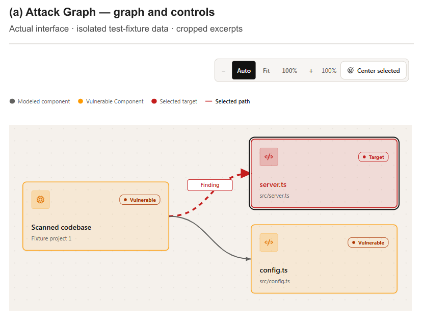
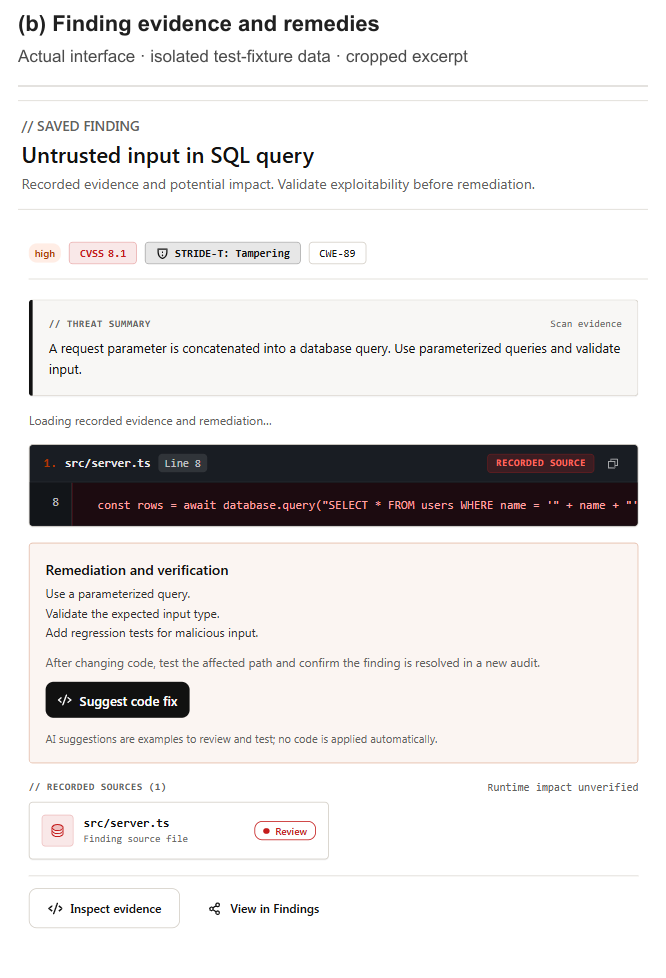

Two panels from the existing application screenshot. Source pixels are preserved. These are isolated test-fixture data, not a live user's audit. Place the panels separately; do not shrink them side by side.


Figure 5.2: Attack Graph interface using isolated test-fixture data: (a) source associations and graph controls; (b) selected finding evidence and remediation guidance. Associations do not establish exploitability.